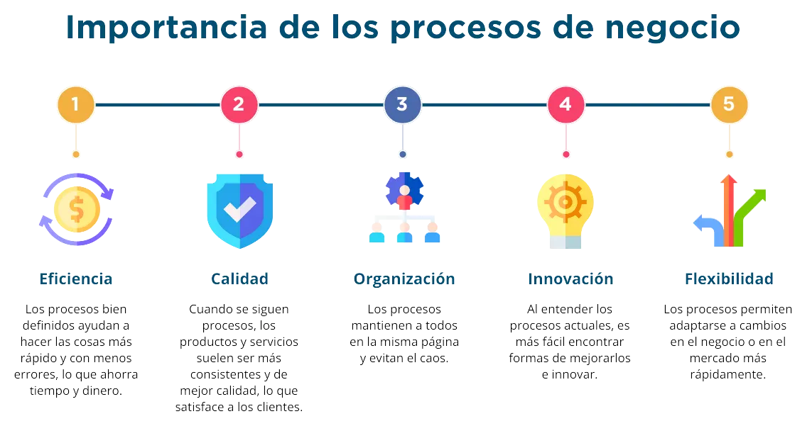
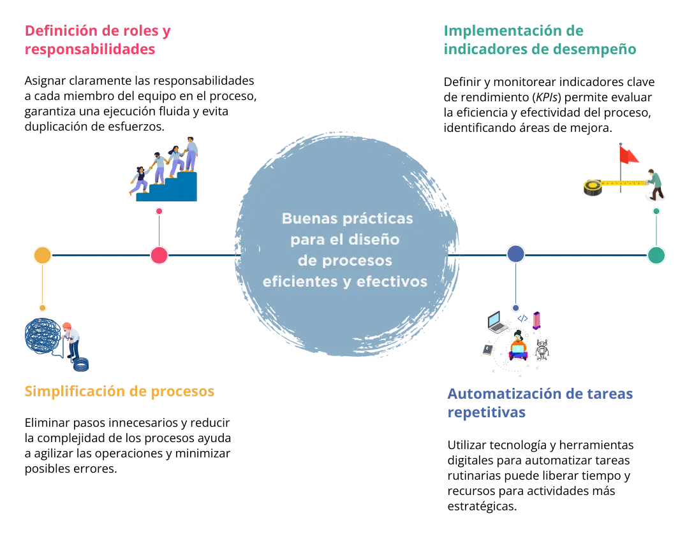
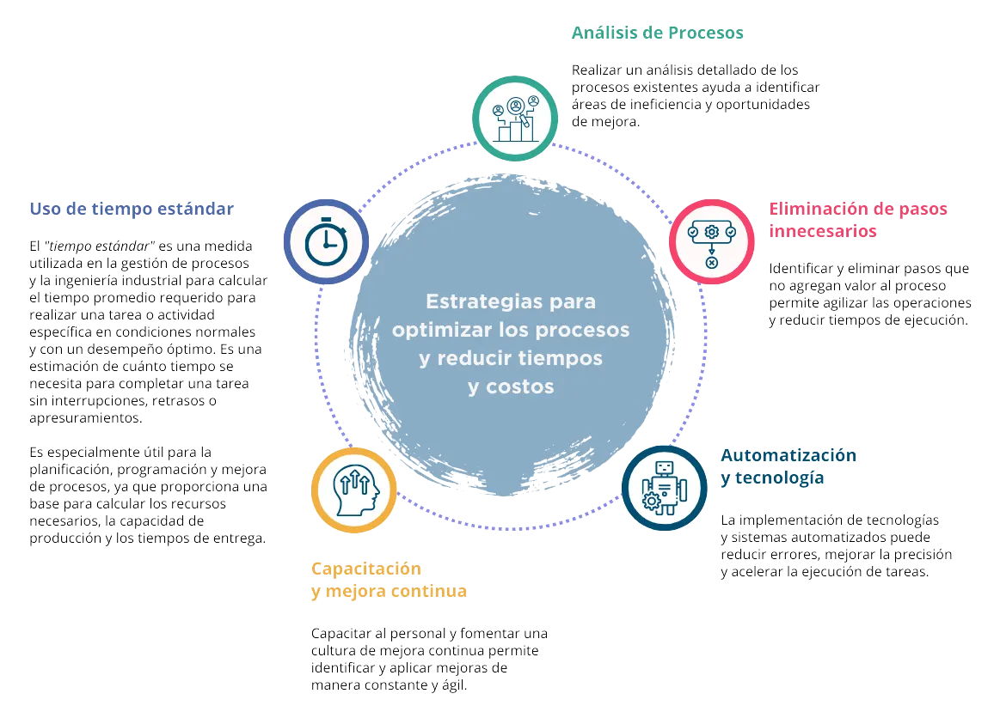

build Introducción
¿Estás listo para desbloquear el máximo potencial de tu pyme a través del desarrollo de competencias en procesos?
Exploremos juntos las competencias esenciales para el éxito y crecimiento sostenible de tu negocio ¡Bienvenido!
Este eje temático está diseñado especialmente para pequeñas y medianas empresas y busca que puedas adquirir habilidades, capacidades, destrezas y conocimiento, a través de una serie de herramientas y estrategias que te permitirán simplificar flujos de trabajo y elevar la productividad de tu negocio.
En este eje encontrarás una combinación de módulos interactivos, podrás profundizar en la comprensión de los procesos de negocio y fortalecerás la capacidad del uso efectivo de la tecnología y los datos, para la solución de problemas y la toma de decisiones en diversos ámbitos organizacionales.
¡Iniciamos!
Empecemos por abordar qué son exactamente los procesos de negocio. Básicamente son una serie de pasos que se siguen para llevar a cabo una actividad o tarea en una organización. Piénsalo como una receta de cocina: tiene una lista de ingredientes y un conjunto de instrucciones que deben seguirse para obtener el plato deseado. En el mundo de los negocios, los procesos son como recetas de cocina, tienen que seguirse las indicaciones.
Ahora, ¿por qué es tan importante tener los procesos de negocio bien definidos? La respuesta es simple: eficiencia y consistencia. Cuando tienes procesos claros y bien estructurados, todos en la empresa saben qué hacer, cuándo hacerlo y cómo hacerlo ¡Una receta segura! Esto evita confusiones y malentendidos, lo que a su vez reduce los errores y los retrabajos. Además, los procesos definidos permiten ahorrar tiempo y recursos, ya que se eliminan los supuestos y se establecen las mejores prácticas para cada tarea.
Si alguna vez has querido implementar nuevas tecnologías en tu empresa, por ejemplo: una plataforma en línea, tener procesos claros es el primer paso. Imagínate que quieren automatizar el proceso de pedidos en su empresa usando un sitio web o una aplicación móvil para teléfonos. Si no tienen claro cómo se manejan los pedidos actualmente, será difícil diseñar un sistema que se ajuste a sus necesidades, pero, si tienen procesos bien definidos, podrán identificar los puntos de mejora y adaptar el sistema de manera efectiva y mucho más rápida.
Además, los procesos de negocio bien definidos son esenciales para la digitalización. En un mundo cada vez más conectado y tecnológico, es importante adaptarse y aprovechar las ventajas que ofrecen las herramientas digitales. Al definir y documentar sus procesos, están sentando las bases para una transición más suave hacia la digitalización. Esto permite aprovechar las ventajas de la automatización, los análisis de datos, la inteligencia artificial y otras tecnologías innovadoras que pueden impulsar tu negocio hacia adelante.
En resumen, los procesos de negocio bien definidos son la base para el éxito de cualquier empresa. Nos ayudan a ser más eficientes, consistentes y nos preparan para la automatización y la digitalización. Entonces, si tienes que mejorar tu negocio, recuerda comenzar por los procesos. ¡Es como tener una guía clara de lo que te llevará hacia el éxito, vamos por ello!
troubleshoot ¿Qué son los procesos de negocio?
1 Introducción a los Procesos de Negocio
1.1 Qué son los procesos de negocio y su importancia en las organizaciones.
Los procesos de negocio son una serie de pasos que seguimos para hacer las cosas de manera organizada en una empresa y que, permiten transformar los insumos en resultados valiosos para una empresa. Son como recetas que nos guían para lograr nuestros objetivos de manera eficiente. Imagina que tienes una panadería. Para hacer pan, necesitas seguir ciertos pasos:
- Mezclar los ingredientes.
- Amasar la masa.
- Dejarla reposar.
- Hornear el pan.
- Enfriarlo y listo, tienes pan fresco.
Cada uno de estos pasos, hacen parte del proceso de negocio de la panadería. Ahora, ¿por qué son importantes los procesos de negocio en las empresas? Veámoslo:
Veamos algunos casos-ejemplos:
Caso 1: Proceso de Atención al Cliente en un restaurante:
- El cliente llega al restaurante y es recibido por el mesero.
- El mesero toma la orden del cliente y la lleva a la cocina.
- El chef prepara la comida y la envía al mesero.
- El mesero entrega la comida al cliente y le pregunta si todo está bien.
- El cliente paga la cuenta y se va satisfecho.
Caso 2: Proceso de Compra en una tienda en línea:
- El cliente busca el producto en el sitio web.
- Agrega el producto al carrito de compras.
- Proporciona los detalles de envío y pago.
- Realiza el pago.
- Recibe una confirmación y número de seguimiento del pedido.
- El producto es entregado en la dirección proporcionada.
1.2 Elementos y características de los procesos de negocio.
Los procesos de negocio son como recetas para hacer las cosas en una empresa. Imagina que tienes un negocio de cupcakes. Para hacer tus deliciosos cupcakes, necesitas seguir ciertos pasos organizados. Cada uno de esos pasos, es un elemento del proceso de negocio y los veremos a continuación:

Así mismo, los procesos de negocio tienen como mínimo ciertas características, distingamos cuáles son:
- Eficiencia: Un proceso bien organizado te permite hacer cupcakes más rápido y sin perder tiempo en pasos innecesarios.
- Calidad: Seguir el mismo proceso te ayuda a hacer cupcakes consistentes y deliciosos cada vez.
- Coordinación: Cuando todos conocen su rol y siguen el flujo de trabajo, el negocio funciona de manera más coordinada y efectiva.
Observemos a modo de ejemplo, el siguiente proceso y sus elementos.
Ejemplo: Proceso de atención al cliente en una tienda de ropa:
- Objetivo: Brindar una excelente experiencia de compra al cliente.
- Actividades: Saludar al cliente, ayudarlo a encontrar lo que busca, mostrarle opciones, atender sus preguntas y procesar su pago.
- Flujo de trabajo: Saludo -> Ayuda -> Mostrar opciones -> Preguntas -> Pago.
- Responsabilidades: Un vendedor atiende al cliente, otro maneja el inventario y otro procesa el pago.
- Reglas y Políticas: No presionar al cliente para comprar, ser amable y respetuoso.
- Tecnología: Puede haber un sistema de punto de venta para procesar el pago rápidamente.
1.3 Tipos de procesos de negocio: operativos, de soporte y de gestión.
Los procesos de negocio son como las piezas de un rompecabezas. Cada pieza tiene su lugar y función específica, y al unirse adecuadamente, forman una imagen completa y funcional. Así pues, para que seamos actores más informados y eficaces en el funcionamiento y el éxito de nuestra pyme, debemos conocer qué tipos de procesos podría llegar a tener en mi organización:
- Procesos Operativos: son las actividades esenciales que una empresa realiza día a día para producir bienes o brindar servicios. Estas piezas son como los colores y formas que forman las partes principales del rompecabezas. Son esenciales para la creación y entrega de los productos o servicios de la empresa. Ejemplo: En un restaurante, el proceso de preparar y servir los platillos es un proceso operativo clave.
- Procesos de Soporte: Estos procesos brindan el respaldo necesario para que los procesos operativos funcionen correctamente. Son como las piezas del borde que rodean y dan soporte a la imagen completa del rompecabezas. Ejemplo: El departamento de atención al cliente es un proceso de soporte que brinda asistencia y soluciona problemas para los clientes.
- Procesos de Gestión: Estos procesos guían y supervisan el funcionamiento general de la empresa. Representan las piezas que unen y coordinan todas las demás, asegurando que el rompecabezas se mantenga unido y se complete exitosamente. Ejemplo: El proceso de planificación es un proceso de gestión que establece la dirección y metas a largo plazo de la empresa.
El ensamblaje adecuado de todas estas piezas es fundamental para que el rompecabezas (es decir, la empresa) funcione eficientemente y alcance sus objetivos.
Reflexión. Preguntas abiertas:
- ¿Por qué crees que los procesos operativos son como las piezas principales de un rompecabezas para una empresa? Identifica los procesos operativos de tu empresa.
- ¿Puedes mencionar un ejemplo de un proceso de soporte en tu pyme, que haya sido clave para tu éxito? ¿Cómo lo podrías mejorar con el uso de tecnologías digitales?
- ¿Cómo pueden los procesos de gestión asegurarse de que todas las piezas del rompecabezas se unan adecuadamente para lograr los objetivos de la empresa?
2 Identificación y Mapeo de Procesos
2.1. Técnicas para identificar y definir los procesos de negocio en una empresa
En una empresa, los procesos de negocio son como las rutas que guían el funcionamiento eficiente y ordenado de todas las actividades. Identificar y definir estos procesos es fundamental para entender cómo se llevan a cabo las tareas y cómo se logran los resultados deseados. A continuación, te presento algunas técnicas sencillas para realizar esta tarea:
- Entrevistas y Encuestas:
Hablar con los empleados y colaboradores clave de la empresa puede proporcionar una visión real de cómo funcionan los procesos en la práctica. Las entrevistas y encuestas permiten recopilar información valiosa sobre las actividades que se realizan, las responsabilidades de cada persona y los desafíos que enfrentan.
Ejemplo: Entrevistar al departamento de ventas para conocer cómo gestionan los pedidos de los clientes, desde la recepción hasta la entrega del producto.
- Observación Directa:
Observar directamente el flujo de trabajo y las acciones que se llevan a cabo en diferentes departamentos ayuda a identificar los pasos involucrados en un proceso. Esta técnica brinda una perspectiva real y concreta de cómo se desarrollan las actividades en el día a día.
Ejemplo: Observar cómo se procesan los pagos en el departamento financiero, desde la recepción de facturas hasta la emisión de los pagos correspondientes.
- Análisis Documental:
Revisar los documentos y registros existentes, como manuales de procedimientos, informes y formularios, proporciona información valiosa sobre cómo se organizan y ejecutan los procesos en la empresa.
Ejemplo: Analizar el manual de recursos humanos para entender el proceso de reclutamiento y selección de nuevos empleados.
2.2. Mapeo y documentación de los procesos: diagramas de flujo y SIPOC
El mapeo y documentación de los procesos de negocio, es como crear un mapa detallado que muestra todas las etapas y pasos necesarios, para llevar a cabo una actividad en una empresa. Esto es esencial para entender cómo funcionan los procesos y comunicarlos de manera clara a todos los involucrados. Dos técnicas comunes para realizar este proceso son los diagramas de flujo y la SIPOC.
- Diagramas de Flujo: Los diagramas de flujo son como guías visuales que representan gráficamente los pasos secuenciales de un proceso. Utilizan símbolos simples, como flechas y cajas, para mostrar las acciones y decisiones que se toman en cada etapa.
Ejemplo: Imagina que estás documentando el proceso de compra en una tienda en línea. Un diagrama de flujo podría mostrar las siguientes etapas: el cliente selecciona un producto, agrega el artículo al carrito, realiza el pago y recibe una confirmación de la compra.
Lectura: ¿Qué es un diagrama de flujo y cómo hacerlo? [2022] • Asana
- Diagrama SIPOC: Los diagramas SIPOC o PEPSU son como mapas que nos muestran de manera sencilla cómo funcionan los procesos en una empresa. Son muy útiles para entender lo que se hace, cómo se hace y quién se beneficia. SIPOC (Supplier, Input, Process, Output, Client, por sus siglas en inglés) o PEPSU (Proveedores, Entradas, Procesos, Salidas y Usuarios, por sus siglas en español). En estos diagramas, de manera regular se incluyen:
- Proveedores: Son quienes nos dan lo que necesitamos para trabajar, como materiales o información.
- Entradas: Son los recursos o información que necesitamos para hacer nuestro trabajo.
- Procesos: Son las acciones que realizamos para transformar las entradas en resultados o productos.
- Salidas: Son los resultados o productos finales que obtenemos después de hacer el trabajo.
- Clientes: Son las personas o entidades que reciben lo que producimos y se benefician de ello.
Al utilizar estos diagramas, podemos ver de manera clara cómo funciona cada proceso y cómo está relacionado con otras partes de la empresa. Esto nos ayuda a encontrar formas de mejorar y tomar decisiones más acertadas para lograr buenos resultados.
Fuente: Gómez, J.C. P. Administración de procesos. Guía para el aprendizaje. Pearson Hispano América.
¿Qué es un diagrama SIPOC? 7 pasos para trazar los procesos de negocios [2022] • Asana
2.3. Identificación de Ineficiencias y Oportunidades de Mejora en los Procesos Existentes
Identificar ineficiencias y oportunidades de mejora en los procesos existentes es como encontrar "piedras en el camino" que afectan el rendimiento de una empresa. Es como buscar formas de hacer las cosas mejor, más rápido y con menos recursos. Veamos cómo podemos llevar a cabo este proceso a través de:
Observación y análisis detallado: Una forma de identificar ineficiencias es observar y analizar cómo se realizan las tareas en cada etapa del proceso. Prestar atención a los cuellos de botella, retrasos o pasos innecesarios puede revelar áreas que necesitan mejoras.
Ejemplo: Si en un proceso de producción se observa que hay mucho tiempo de espera entre una etapa y otra, se podría sugerir una reorganización de las actividades para reducir los tiempos muertos.
Recopilación de datos y métricas: Medir el rendimiento del proceso utilizando datos y métricas clave permite identificar áreas donde los resultados no cumplen con los objetivos establecidos.
Ejemplo: En el proceso de entrega de pedidos, se podría medir el tiempo promedio de entrega y compararlo con el tiempo esperado. Si hay una diferencia significativa, se podría investigar la causa y tomar acciones correctivas.
Retroalimentación de los empleados: Los trabajadores que están directamente involucrados en los procesos a menudo tienen ideas valiosas para mejorarlos. Escuchar sus opiniones y sugerencias puede revelar oportunidades de optimización.
Ejemplo: En un proceso de atención al cliente, los empleados pueden señalar que ciertos formularios son complicados de llenar, lo que retrasa la resolución de problemas. Simplificar el formulario podría ser una mejora significativa.
3 Diseño y optimización de procesos
3.1 Buenas prácticas para el diseño de procesos eficientes y efectivos
Diseñar procesos eficientes y efectivos es como construir una máquina bien aceitada que funciona sin problemas y produce resultados excepcionales. Aquí te presento algunas buenas prácticas para lograrlo:
3.2. Estrategias para optimizar los procesos y reducir tiempos y costos
Optimizar los procesos es como ajustar un reloj para que funcione con precisión y ahorre tiempo y dinero. Aquí te presento algunas estrategias efectivas para lograrlo:
Un ejemplo de tiempo estándar podría ser el tiempo promedio que un trabajador necesita para ensamblar un producto específico en una línea de producción. Supongamos que se quiere determinar el tiempo estándar para ensamblar un teléfono móvil:
- Se cronometra el tiempo que un trabajador experimentado tarda en ensamblar un teléfono móvil desde el inicio hasta la finalización en varias ocasiones (por ejemplo, 20 veces).
- Se suman los tiempos registrados y se dividen por el número de observaciones para obtener el promedio.
- Supongamos que el tiempo total registrado fue de 100 minutos para las 20 observaciones, entonces el tiempo estándar para ensamblar un teléfono móvil sería 100 minutos / 20 observaciones = 5 minutos por teléfono.
Este tiempo estándar de 5 minutos indica que, en condiciones normales y con un desempeño óptimo, un trabajador podría ensamblar un teléfono móvil en aproximadamente 5 minutos. Es importante destacar que el tiempo estándar debe revisarse periódicamente y, ajustarse según las condiciones cambiantes de producción o factores externos que puedan afectar el proceso.
Para más detalles ver el siguiente video https://youtu.be/d-d19ze6V-E
3.3. Automatización y digitalización de procesos para mejorar la productividad
Imagina que los procesos de una empresa son como los engranajes de una máquina. Cuando automatizamos y digitalizamos estos engranajes, hacemos que todo funcione de manera más rápida, eficiente y precisa. Aquí te explico, cómo la automatización y la digitalización pueden mejorar la productividad de tu pyme:
Ahorro de tiempo y recursos: Automatizar tareas repetitivas y tediosas libera tiempo para que los empleados se enfoquen en actividades más estratégicas y creativas.
Ejemplo: Un software de gestión de proyectos puede automatizar el seguimiento de tareas y plazos, lo que ahorra tiempo y evita errores en la planificación.
Reducción de errores y mejora de la precisión: Al usar tecnología, disminuimos el riesgo de cometer errores humanos y logramos una mayor precisión en los resultados.
Ejemplo: La digitalización de informes financieros puede reducir los errores de cálculo y asegurar que los datos estén siempre actualizados.
Acceso y colaboración remota: La digitalización permite acceder a información y colaborar desde cualquier lugar, lo que facilita el trabajo en equipo y la comunicación.
Ejemplo: Con herramientas de colaboración en línea, los equipos pueden trabajar juntos en un proyecto sin importar su ubicación geográfica.
Mejora de la eficiencia global: La automatización y digitalización permiten una ejecución más rápida de los procesos, lo que se traduce en una mejora general de la eficiencia.
Ejemplo: Un sistema de gestión de inventario automatizado puede optimizar los niveles de stock y evitar excesos o faltantes, mejorando la eficiencia logística.
En reflexión, la automatización y digitalización de procesos en pymes, así como la gestión óptima del dato, permite a tu pyme mejorar la productividad al agilizar tareas, reducir errores y permitir enfoque en actividades estratégicas, impulsando la eficiencia y crecimiento competitivo.
4 Gestión y Control de Procesos
4.1. Elementos clave de la gestión de procesos: indicadores de rendimiento (Kpis), SLAs, etc.
La gestión de procesos es como dirigir una orquesta para lograr una armonía perfecta en el funcionamiento de una empresa. Para lograrlo, existen elementos clave que nos ayudan a medir y controlar el desempeño de los procesos. Aquí te presento algunos de ellos:
Indicadores de rendimiento (Kpis): Los KPIs son como indicadores luminosos que nos muestran si un proceso está funcionando bien o necesita ajustes. Son medidas que reflejan el éxito o el desempeño de un proceso.
Ejemplo: En el proceso de ventas, un KPI puede ser la tasa de conversión, que indica cuántos prospectos se convierten en clientes.
SLAs (Service level agreements): Los SLAs son como acuerdos de nivel de servicio que establecen expectativas claras entre proveedores y clientes internos o externos sobre la calidad y el tiempo de respuesta de un proceso.
Ejemplo: Un SLA en el proceso de soporte técnico podría especificar que el equipo debe responder a los tickets (número de reporte) dentro de las 24 horas siguientes a su recepción.
Mapas de flujo de valor: Los mapas de flujo de valor son como mapas detallados que muestran todos los pasos de un proceso, identificando dónde hay desperdicios y oportunidades de mejora.
Ejemplo: En el proceso de fabricación de un producto, un mapa de flujo de valor puede mostrar cómo se utiliza el tiempo y los recursos en cada etapa del proceso.
4.2. Implementación de un sistema de gestión de procesos (bpm) en la empresa
Implementar un Sistema de gestión de procesos (BPM) en una pyme es como instalar un centro de control que supervisa y mejora todos los engranajes de la organización. El BPM es una herramienta que ayuda a gestionar los procesos de manera eficiente y efectiva. Aquí te explico cómo funciona y cómo puede beneficiar a la empresa:
Mapeo y documentación de procesos: El BPM comienza con el mapeo y documentación detallada de todos los procesos de la empresa. Esto significa crear mapas que muestren todos los pasos y decisiones en cada proceso.
Ejemplo: En un proceso de reclutamiento, el BPM puede mostrar cómo se recibe la solicitud de empleo, cómo se selecciona al candidato y cómo se realiza la contratación.
Automatización de procesos: Una vez que los procesos están mapeados, el BPM permite automatizar tareas y flujos de trabajo, lo que ahorra tiempo y reduce errores.
Ejemplo: En el proceso de aprobación de gastos, el BPM puede automatizar las notificaciones a los gerentes y la revisión de los informes de gastos.
Medición y mejora continua: El BPM también incluye la medición del desempeño de los procesos mediante indicadores clave (KPIs). Esto permite identificar áreas de mejora y optimización.
Ejemplo: Mediante el BPM, se puede medir el tiempo promedio de respuesta en el servicio al cliente y buscar formas de reducirlo.
Sugerimos ver el siguiente video para mayor detalle: https://youtu.be/0fTWBDyZ4fI
4.3. Monitoreo y mejora continua de los procesos para garantizar su eficacia
El monitoreo y mejora continua de los procesos es como tener un radar que nos permite detectar obstáculos y ajustar el rumbo para alcanzar nuestros objetivos de manera más eficiente. Aquí te explico cómo funciona y por qué es tan importante:
Monitoreo de Procesos: El monitoreo implica supervisar constantemente cómo se desarrollan los procesos en tiempo real. Se utilizan indicadores de rendimiento (KPIs) para medir el desempeño de los procesos.
Ejemplo: En el proceso de atención al cliente, se puede monitorear el tiempo de respuesta promedio y la satisfacción del cliente como KPIs.
Identificación de desviaciones: El monitoreo nos ayuda a identificar desviaciones o variaciones no deseadas en el rendimiento de los procesos.
Ejemplo: Si un proceso de producción tiene un aumento en los tiempos de producción, esto podría indicar un problema que requiere atención.
Mejora continua: Una vez que se identifican las desviaciones, se pueden implementar acciones correctivas para mejorar los procesos de manera constante.
Ejemplo: Si el tiempo de entrega en un proceso logístico es más largo de lo esperado, se puede mejorar la planificación de rutas para acelerar la entrega.
5 Procesos de negocio y transformación digital
5.1 Relación entre procesos de negocio y la transformación digital
En la era digital, las pymes se enfrentan a un entorno altamente competitivo y en constante cambio. La transformación digital se ha convertido en una necesidad para mantenerse relevantes y adaptarse a las demandas del mercado. En este contexto, los procesos de negocio juegan un papel fundamental en la estrategia de transformación digital de una empresa.
Automatización y mejora de procesos: La transformación digital implica la automatización de tareas y flujos de trabajo en los procesos de negocio mediante tecnologías como la inteligencia artificial, el internet de las cosas (IoT) y la automatización robótica de procesos (RPA). Esto permite agilizar las operaciones y reducir los tiempos de ejecución, lo que se traduce en una mejora significativa de la eficiencia y productividad.
Ejemplo: En una empresa de servicios financieros, la adopción de un chatbot para atender consultas de clientes puede agilizar el proceso de atención al cliente y liberar al personal para tareas más estratégicas. Al mismo tiempo, un sistema automatizado de análisis de datos puede detectar patrones de comportamiento de los clientes y ofrecer recomendaciones de productos personalizadas.
Acceso y colaboración remota: La transformación digital también facilita el acceso a información y la colaboración entre equipos de trabajo, independientemente de su ubicación geográfica. Plataformas en línea, herramientas de gestión de proyectos y sistemas de comunicación en tiempo real permiten a los equipos trabajar de forma más colaborativa y ágil.
Ejemplo: Un equipo de desarrollo de software, con miembros en diferentes países, puede utilizar herramientas en la nube para compartir código, documentación y realizar reuniones virtuales de manera eficiente. Esto permite una colaboración más fluida y una toma de decisiones más rápida.
Análisis de datos para la toma de decisiones: La transformación digital ofrece una amplia gama de herramientas para recopilar, almacenar y analizar datos en tiempo real. Estos análisis de datos permiten a las empresas tomar decisiones más informadas, identificar patrones y tendencias, y mejorar su capacidad de prever cambios en el mercado.
Ejemplo: Una empresa de comercio electrónico puede utilizar análisis de datos para entender el comportamiento de compra de sus clientes, identificar productos más vendidos y personalizar las recomendaciones de productos. Esto mejora la capacidad de la empresa para adaptarse rápidamente a las preferencias cambiantes de los clientes.
5.2 Cómo aprovechar las tecnologías digitales para innovar y optimizar los procesos
En el mundo actual, la tecnología digital ha revolucionado la forma en que las empresas operan y gestionan sus procesos.
La adopción de tecnologías digitales ofrece a las organizaciones una oportunidad única para innovar y optimizar sus procesos, lo que puede conducir a una mayor eficiencia, reducción de costos y mejora de la calidad de los productos y servicios. Veamos cómo podemos aprovechar estas tecnologías para impulsar la innovación y la optimización en los procesos empresariales.
Automatización de Procesos: La automatización es una de las formas más efectivas de optimizar los procesos. Mediante el uso de tecnologías como la inteligencia artificial y la automatización robótica de procesos (RPA), las tareas manuales y repetitivas pueden ser realizadas por sistemas automatizados, liberando tiempo y recursos para tareas más estratégicas.
Por ejemplo, un sistema de chatbot puede atender consultas de clientes de manera instantánea y precisa, mejorando la satisfacción del cliente y reduciendo la carga de trabajo del personal.
Análisis de datos y Big data: El análisis de datos es una herramienta poderosa para la toma de decisiones informadas. Al recopilar y analizar grandes cantidades de datos, las empresas pueden identificar patrones, tendencias y oportunidades de mejora en sus procesos.
Por ejemplo, una cadena de supermercados puede utilizar análisis de datos para optimizar su inventario, asegurándose de tener suficientes existencias para satisfacer la demanda sin incurrir en exceso de inventario.
Internet de las cosas (IoT): El término IoT (por sus siglas en inglés) refiere a una red colectiva de dispositivos conectados, que gracias al Internet se logran interconectar aparatos como aspiradoras, coches, interruptores de luz. El uso de IoT permite a las empresas conectar dispositivos y objetos físicos a internet, lo que brinda una mayor visibilidad y control sobre los procesos.
Por ejemplo, en el sector manufacturero, sensores conectados pueden monitorear el rendimiento de las máquinas en tiempo real, detectar fallos potenciales y facilitar un mantenimiento predictivo, evitando costosos tiempos de inactividad.
Plataformas de colaboración: Las plataformas de colaboración en línea permiten una comunicación más fluida y una colaboración efectiva entre equipos de trabajo, incluso si están distribuidos geográficamente. Esto agiliza la toma de decisiones y la resolución de problemas, mejorando la eficiencia en los procesos.
Por ejemplo, un equipo de desarrollo de software puede utilizar herramientas de colaboración para trabajar en un proyecto de manera conjunta, compartiendo ideas y conocimientos en tiempo real.
Realidad virtual y aumentada: La realidad virtual y aumentada tienen aplicaciones en la formación y entrenamiento de empleados, así como en la simulación de procesos complejos.
Por ejemplo, en la industria de la aviación, los técnicos pueden utilizar gafas de realidad aumentada para acceder a manuales y guías de reparación mientras trabajan en una aeronave, mejorando la precisión y eficiencia en las tareas de mantenimiento.
Para mayor detalle, es recomendable ver este video: https://youtu.be/PLpDCK3Zy7Q
5.3 Estudio de casos: empresas que han logrado una transformación exitosa
La transformación digital ha sido una prioridad para muchas empresas en la última década, y algunas han logrado transformaciones exitosas que han impulsado su crecimiento y éxito en el mercado. Veamos algunos casos de estudio de empresas que han llevado a cabo transformaciones exitosas:
- Netflix: Esta empresa, ha sido un ejemplo destacado de transformación digital en la industria del entretenimiento. La empresa pasó de ser un servicio de alquiler de DVD por correo a un gigante del streaming (transmisión en tiempo real de contenido multimedia, como videos, música o eventos, a través de Internet) en línea. Netflix invirtió en tecnología para mejorar la personalización de contenidos y recomendaciones, lo que permitió a los usuarios disfrutar de una experiencia de entretenimiento altamente personalizada. Esta transformación ha llevado a Netflix a convertirse en uno de los principales proveedores de contenido en línea a nivel mundial.
- Amazon: Esta empresa ha revolucionado la forma en que las personas compran en línea. La empresa comenzó como una tienda de libros en línea y ha evolucionado para ofrecer una amplia gama de productos y servicios. Amazon ha sido pionero en el uso de tecnologías avanzadas, como la inteligencia artificial y la robótica, para optimizar sus operaciones logísticas y mejorar la experiencia del cliente. La empresa ha transformado radicalmente la industria minorista y ha establecido nuevos estándares en términos de rapidez y eficiencia en la entrega.
- Starbucks: Es un ejemplo de cómo la tecnología puede mejorar la experiencia del cliente en la industria de servicios. La empresa ha invertido en aplicaciones móviles y sistemas de pago para agilizar el proceso de compra y fomentar la lealtad del cliente. Los clientes pueden realizar pedidos y pagar a través de la aplicación, lo que reduce los tiempos de espera y facilita la personalización de los pedidos. Esta transformación digital ha impulsado el crecimiento de Starbucks y ha fortalecido su relación con los clientes.
- General Electric (GE): Es un ejemplo de cómo una empresa centenaria ha abrazado la transformación digital para mantenerse relevante en la era moderna. La compañía ha implementado tecnologías digitales en sus operaciones industriales, utilizando el Internet de las Cosas (IoT) y el análisis de datos para optimizar el rendimiento de sus equipos y mejorar la eficiencia en la producción. Esta transformación ha permitido a GE ofrecer soluciones más avanzadas y personalizadas a sus clientes.
- Adidas: Ha utilizado la transformación digital para mejorar su cadena de suministro y ofrecer productos personalizados a sus clientes. La empresa ha implementado tecnologías de fabricación aditiva (impresión 3D) para producir calzado personalizado de manera más eficiente y rápida. Además, Adidas ha utilizado el análisis de datos para entender mejor las preferencias de los clientes y diseñar productos que se ajusten a sus necesidades específicas.
6 Futuras tendencias en procesos de negocio
6.1 Exploración de tendencias emergentes en procesos de negocio
En el mundo empresarial en constante evolución, las tendencias emergentes en los procesos de negocio juegan un papel crucial para mantener la competitividad y la eficiencia. A continuación, exploraremos algunas de las tendencias más importantes de manera sencilla:
Automatización Inteligente: La automatización inteligente, que combina la inteligencia artificial y la automatización robótica de procesos (RPA), está transformando la forma en que se llevan a cabo las tareas comerciales. Estos sistemas pueden aprender y mejorar a medida que interactúan con datos, permitiendo la automatización de tareas repetitivas y la toma de decisiones más precisas. Por ejemplo, chatbots inteligentes pueden responder preguntas de clientes en tiempo real, mejorando la atención al cliente.
Procesos de negocio ágiles: Los procesos de negocio ágiles se basan en la flexibilidad y la adaptabilidad para responder rápidamente a los cambios del mercado y las necesidades de los clientes. En lugar de seguir procedimientos rígidos, las empresas adoptan enfoques más colaborativos y abiertos a la experimentación. Esto les permite ajustar sus operaciones rápidamente y mantenerse al día con las demandas cambiantes del entorno empresarial.
Analítica avanzada de datos: La analítica avanzada de datos está revolucionando la forma en que las empresas toman decisiones informadas. Utilizando técnicas de Big data y análisis predictivo, las organizaciones pueden obtener ideas más profundas sobre sus operaciones y clientes. Esto les permite optimizar sus procesos y servicios, anticipar tendencias y tomar decisiones más estratégicas. Por ejemplo, análisis de datos puede ayudar a predecir la demanda de productos y planificar el inventario de manera más eficiente.
Integración de Blockchain en procesos empresariales: La tecnología blockchain está siendo utilizada cada vez más en la gestión de procesos empresariales. Esta tecnología permite el registro seguro y descentralizado de transacciones, lo que mejora la transparencia y la confianza en la cadena de suministro y otros procesos. Por ejemplo, en la industria de alimentos, blockchain puede rastrear el origen de los productos y garantizar su autenticidad y seguridad.
Enfoque en la experiencia del cliente: La experiencia del cliente se ha convertido en un enfoque central para muchas empresas. Los procesos de negocio se están diseñando con la satisfacción del cliente en mente, desde la adquisición hasta el servicio postventa. La personalización y la atención al cliente son clave para retener clientes y fomentar la lealtad.
Conclusión:
Las tendencias emergentes en procesos de negocio están revolucionando la forma en que las empresas operan y se relacionan con sus clientes. La automatización inteligente, la agilidad, el análisis de datos, la integración de blockchain y el enfoque en la experiencia del cliente son factores clave para el éxito empresarial en el futuro.
Referencias
loyalty Beneficios

En conclusión, tener procesos de negocio bien definidos es esencial para el éxito de una empresa. Nos ayuda a trabajar de manera más eficiente, minimizar errores, mantener una calidad constante y prepararnos para el futuro. Así que ¡no subestimes el poder de los procesos bien establecidos!
Reflexión
En el mundo empresarial, a veces nos enfocamos en los resultados finales y nos olvidamos de los procesos que nos llevan allí. Sin embargo, los procesos son la base de nuestro éxito. Si dedicamos tiempo y esfuerzo a definirlos correctamente, nos beneficiaremos de una mayor eficiencia, calidad y adaptabilidad. Entonces, recordemos siempre la importancia de tener procesos de negocio bien definidos, ¡son el camino hacia el crecimiento y el logro de nuestras metas!
account_tree Proceso